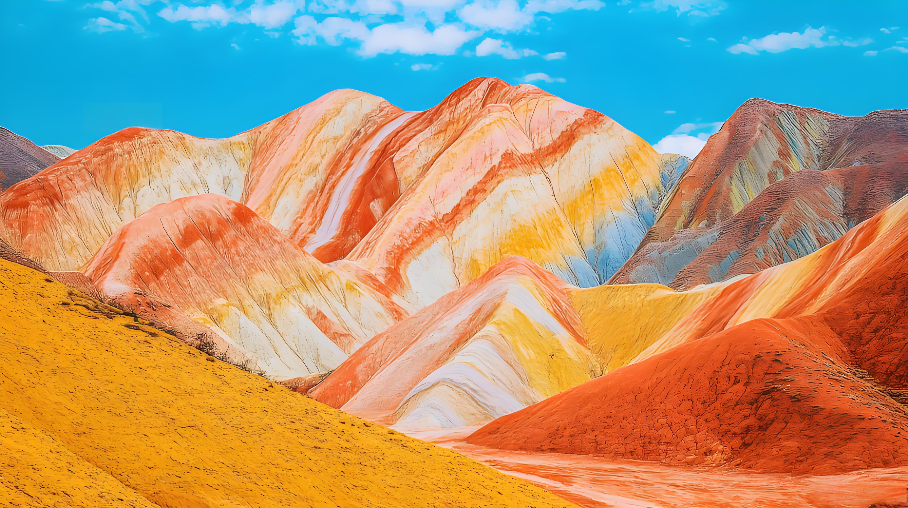
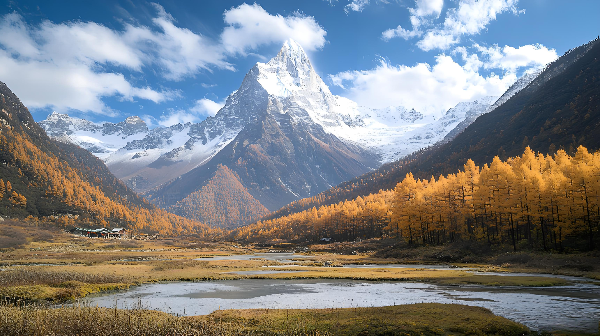
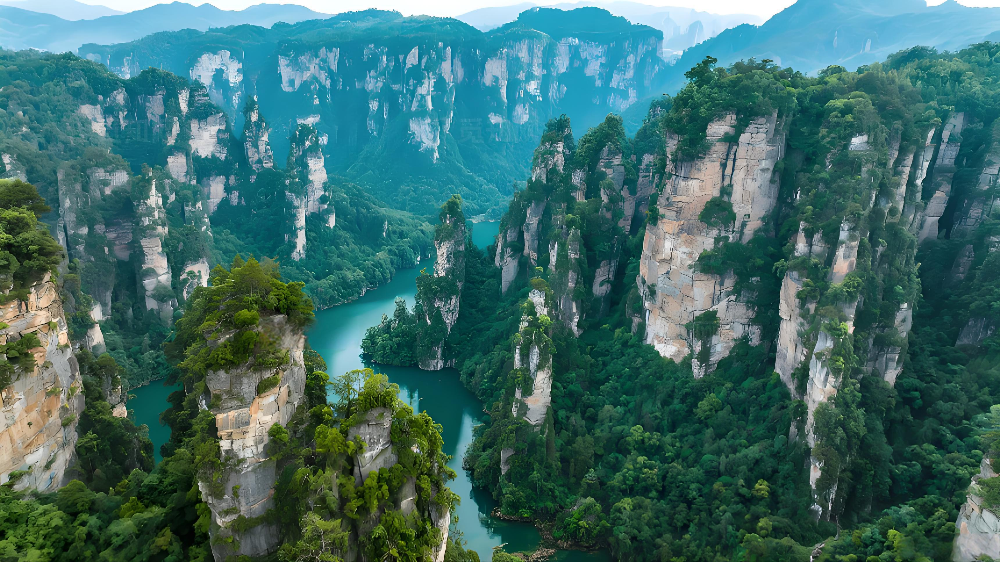
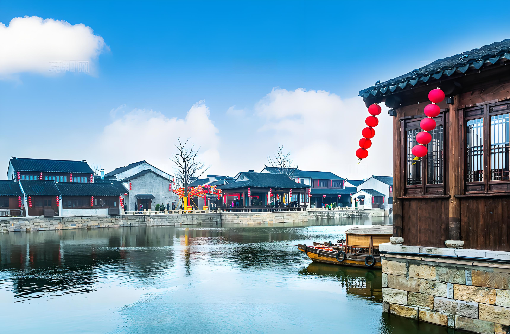
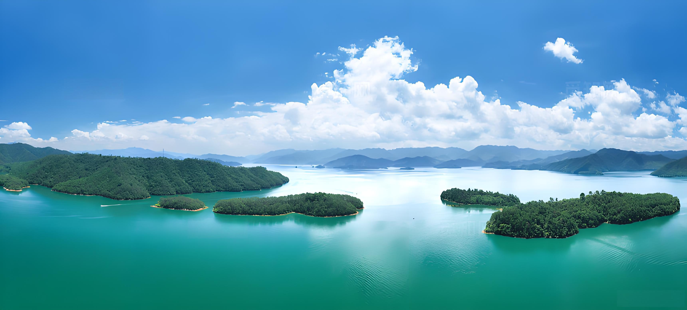

×



稻城亚丁位于四川甘孜藏族自治州，被誉为“最后的香格里拉”，雪山、草甸、海子构成绝美高原风光。

张家界以独特的石英砂岩峰林地貌闻名，峰峦叠嶂，云雾缭绕，宛如仙境，是《阿凡达》取景地之一。
乌镇是江南六大古镇之一，依水而建，白墙黛瓦，小桥流水，尽显江南水乡的温婉与雅致。
浙江：山水江南，诗画之乡
三面云山一面城，十景风光冠江南，西湖以秀丽的湖光山色和众多的名胜古迹闻名于世。
中国首批历史文化名镇，素有“中国最后的枕水人家”之誉，保留着完整的明清古建筑群。
五岳归来不看山，黄山归来不看岳，以奇松、怪石、云海、温泉“四绝”闻名天下。

西塘以“桥多、弄多、廊棚多”三大特色闻名，夜色中的西塘更是充满了江南水乡的浪漫气息。

拥有1078座岛屿，湖水清澈见底，岛屿星罗棋布，是集观光、度假、休闲于一体的旅游胜地。
南浔古镇是江南六大古镇中最具文化气息的一个，保留着大量的明清时期豪门宅第和园林。